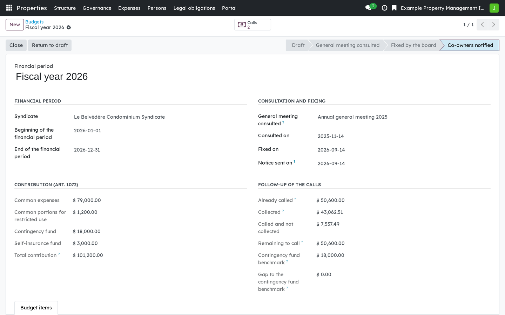
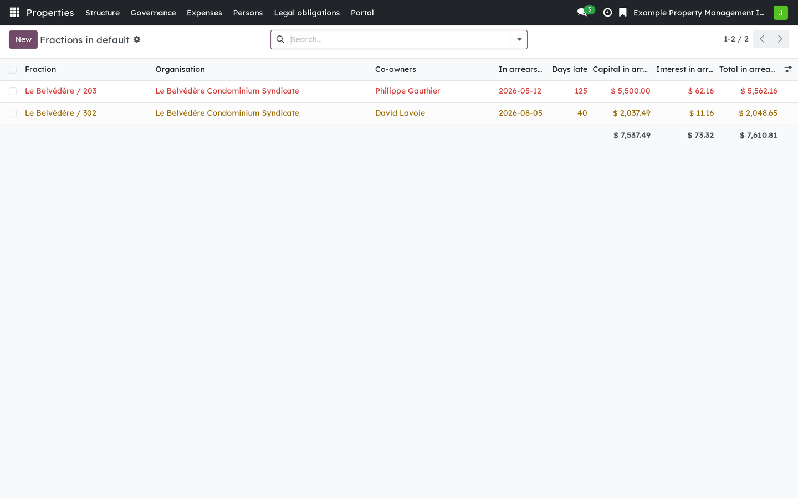
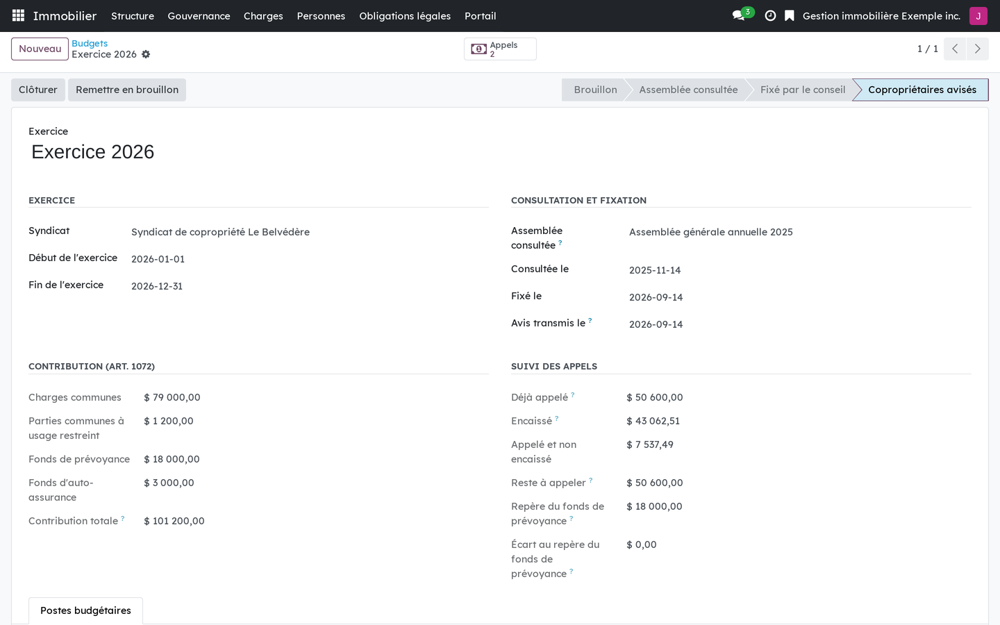
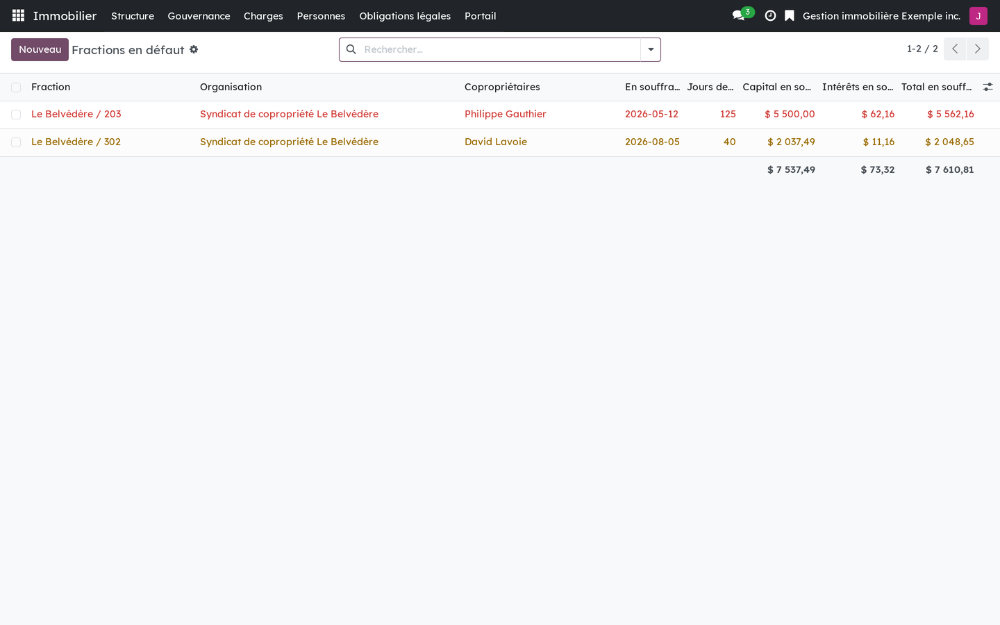

Version française plus bas.
The board of a syndicate fixes the contribution to common expenses after consulting the general meeting (art. 1072 CCQ), calls it from each fraction, collects it, and pursues what is late. Each of those steps has a rule in the Code, and several are commonly misread: the three regimes of art. 1064, the floors of the contingency fund, the imputation of a partial payment. This module follows the text, allocates to the cent, and says on screen when a question needs a judgement it will not make.

A budget consulted, fixed by the board and notified, then followed through what was called and collected.

Arrears by fraction: the oldest unpaid contribution, the days of delay, capital and interest.
Requires Properties: foundation (bf_property_core) and Co-ownership:
general meetings (bf_property_governance). Co-ownership: maintenance log,
study and certificates (bf_property_records) writes the study's
recommendations back to the syndicate, and Co-ownership: secure hand-over of
documents (bf_property_securetransfer) can deliver the statement of
common expenses due.
This is software, not legal advice.
Business Source License 1.1. You may use this module in production for your own internal business operations, which include administering immovables that you own or that you are constituted to administer, and letting a person acting on your behalf use your instance for that purpose. Administering immovables for the account of others, or providing the module to third parties as a product or service, whether hosted, managed or resold, requires a separate written agreement with the licensor. Each version converts to LGPL-3.0-or-later on the Change Date stated in the LICENSE file, which sets out the exact terms.
Le conseil d'un syndicat fixe la contribution aux charges communes après avoir consulté l'assemblée (art. 1072 C.c.Q.), l'appelle auprès de chaque fraction, l'encaisse et poursuit ce qui tarde. Chacune de ces étapes a sa règle au Code, et plusieurs sont souvent mal lues : les trois régimes de l'art. 1064, les planchers du fonds de prévoyance, l'imputation d'un paiement partiel. Ce module suit le texte, répartit au sou près, et dit à l'écran quand une question demande un jugement qu'il ne portera pas.

Un budget consulté, fixé par le conseil et notifié, puis suivi dans ce qui a été appelé et encaissé.

Les arrérages par fraction : la plus ancienne contribution impayée, les jours de retard, le capital et les intérêts.
Exige Immeubles : socle (bf_property_core) et Copropriété : assemblées
(bf_property_governance). Copropriété : carnet, étude et attestations
(bf_property_records) reporte au syndicat les recommandations de l'étude,
et Copropriété : remise sécurisée des documents
(bf_property_securetransfer) peut remettre l'état des charges dues.
Ce logiciel ne donne pas d'avis juridique.
Business Source License 1.1. Vous pouvez utiliser ce module en production pour vos propres activités internes, ce qui comprend l'administration des immeubles dont vous êtes propriétaire ou que vous êtes constitué pour administrer, et l'usage de votre instance à cette fin par une personne qui agit pour votre compte. Administrer des immeubles pour le compte d'autrui, ou fournir le module à des tiers comme produit ou service, hébergé, géré ou revendu, exige une entente écrite distincte avec le concédant. Chaque version passe sous LGPL-3.0 ou ultérieure à la date de changement inscrite au fichier LICENSE, qui fait foi.